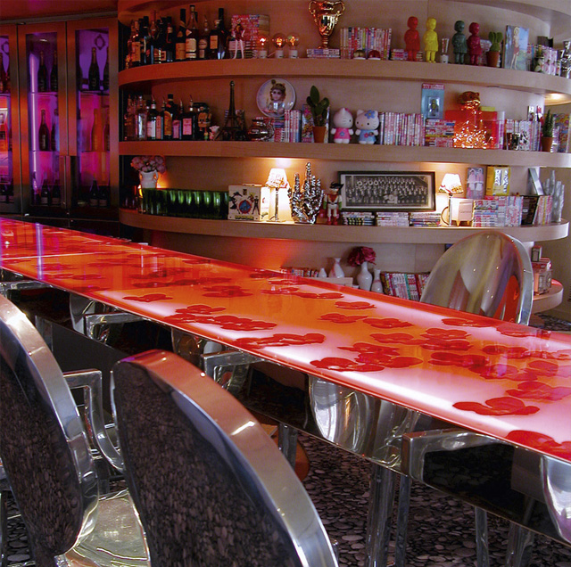
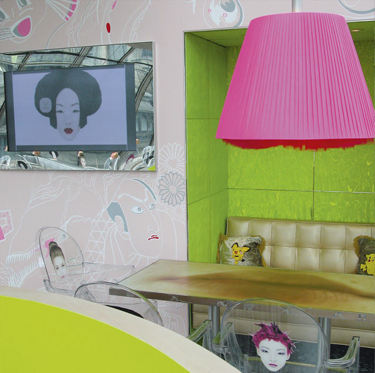

В этом ресторане даже чтение меню доставит большое удовольствие: тартар из утки с ананасами и перепелиными яйцами; сюпрем из цесарки с муссом из семги и зеленой спаржей; медальоны из телятины с полентой под омаровым соусом; ризотто с ванильным молоком и подсоленной карамелью на десерт – любого посетителя охватит предвкушение радости, которое только усилится от при виде блюд, оформленных Эммануэлем Гомесом. Повар ресторана „La Petite Cour“ всегда очень изобретателен в сервировке своих творений. Поистине неотразимы его маринованные сардины с лимонной мелиссой, малиной и долго выдержанным бальзамическим уксусом: сардины свернуты в трубочки и заполнены ягодами, сверху сбрызнуты уксусом, а грибы на тонких длинных ножках выглядывают из рыбных трубочек, как рожки из панциря улитки. Не менее изыскан и интерьер залов. Потолки кремового цвета, отделанные по краю декоративным бордюром, отлакированы до блеска, и в них отражаются ниши и выступы, расположенные внизу. С потолком и стенами контрастируют ярко-красные кресла, а мягкие спинки над скамьями, прикрепленные к стене, напоминают красные фартуки. Тема искусства проходит в этом заведении сквозной нитью, „Le Petite Cour“ одновременно является галереей, где современные художники выставляют свои работы, а терраса считается одной из самых уютных в Париже. Как и ресторан, она расположена немного ниже уровня улицы за увитой розами стеной из природного камня. Еще один приятный момент: сюда можно легко добраться на машине и припарковаться у Рынка Сен-Жермен (Marché St. Germain).


{kind=link}
{kind=link}